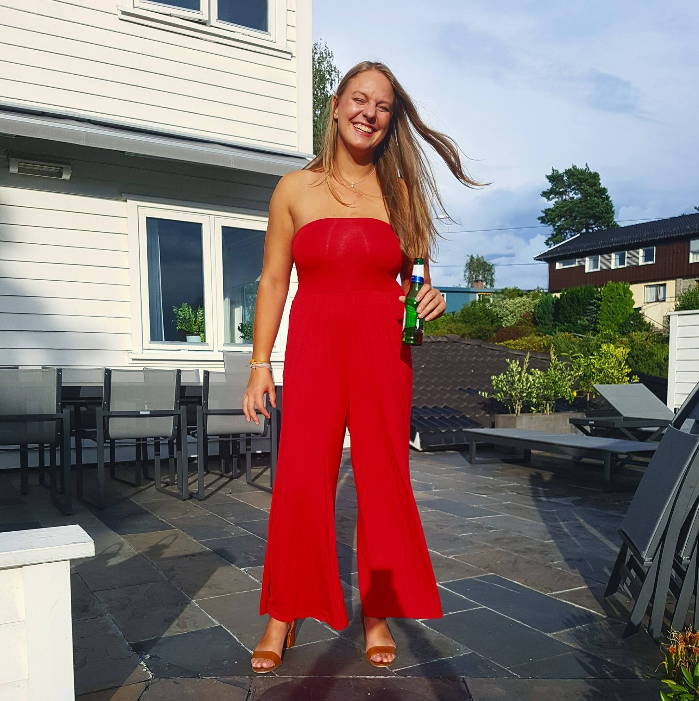

Om meg
Jeg er 24 år gammel og kommer fra Høvik i Bærum. Fra før av har jeg en bachelorgrad i produksjonsteknikk fra HVL fra tidligere. På fritiden liker jeg å drikke både øl, vin og sprit, og mye av det. Drikkingen foregår som regel, men ikke alltid i sosialt samvær med andre studenter, fortrinnsvis Kronbarfolk.
Socials